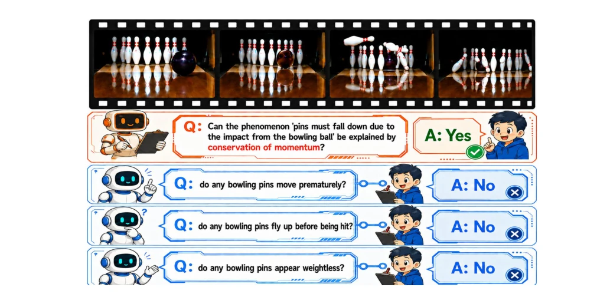
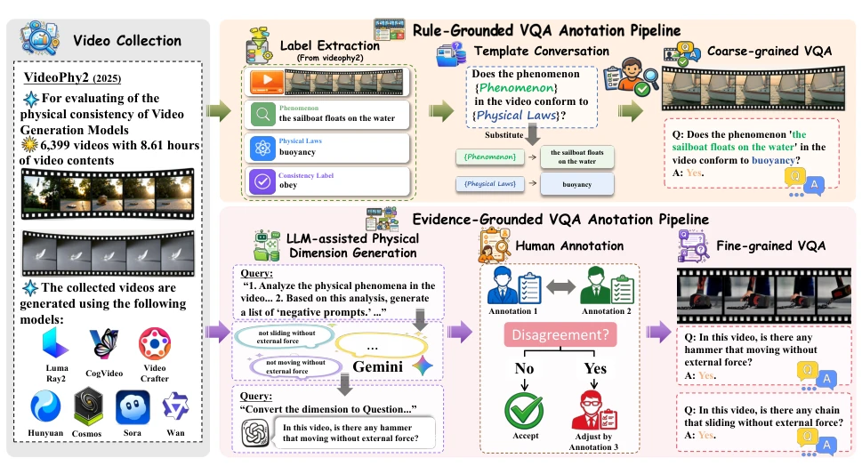
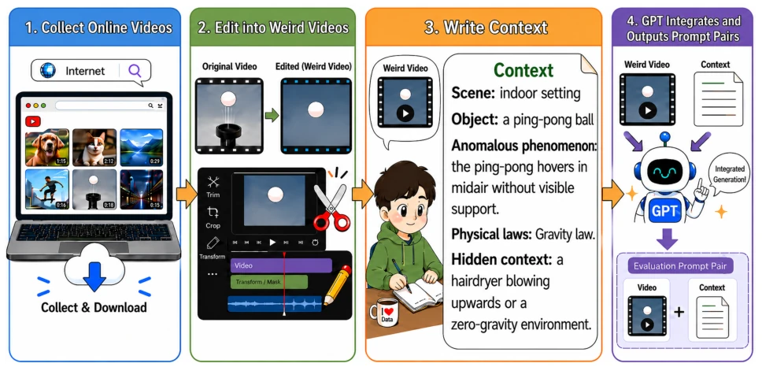
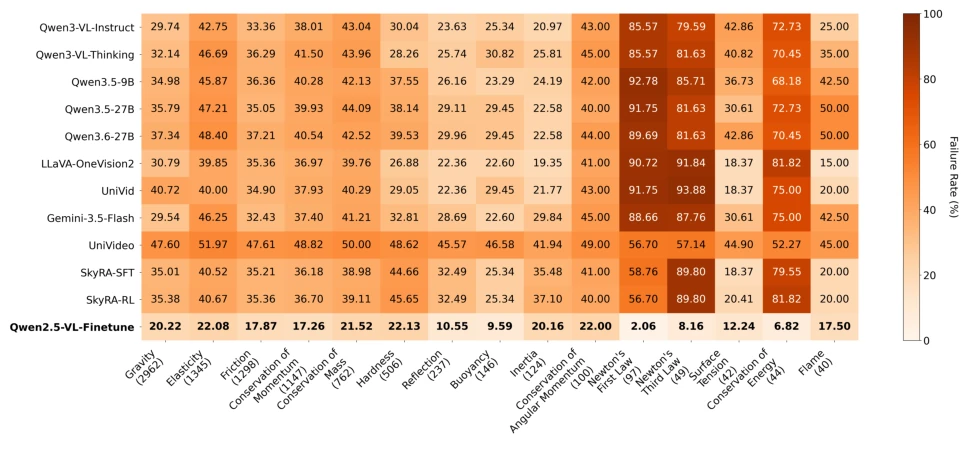

这篇论文给 Video-LLM 的物理理解能力做了个“深度体检”，但体检报告有点“痛”。PhyCheck 确实填补了细粒度证据的空白，不再满足于“这视频对不对”，而是问“哪里不对、为什么不对”。作者试图打破模型依赖统计捷径的现状，强制其关注物理机制。不过，作者似乎对“上下文敏感”这块有点过于乐观，50 对样本的 pilot study 就像在暴风雨里点蜡烛，虽然证明了微调后的模型能“听劝”，但规模太小，难以支撑大结论。现有的 Video-LLM 大多还是靠统计捷径混日子，PhyCheck 试图把它们逼到墙角，但墙角里可能还有更多物理定律没被覆盖。总的来说，这是一个扎实的基准，数据清洗严谨，但别指望它立刻让机器人学会牛顿力学，毕竟物理世界比视频生成复杂得多。
This paper conducts a "deep checkup" on the physical understanding capabilities of Video-LLMs, but the checkup report is somewhat "painful." PhyCheck indeed fills the gap in fine-grained evidence, no longer satisfied with "is this video correct," but asking "where is it wrong and why." The authors attempt to break the status quo of models relying on statistical shortcuts, forcing them to focus on physical mechanisms. However, the authors seem somewhat overly optimistic about "context sensitivity"; the pilot study with 50 pairs of samples is like lighting a candle in a storm. Although it proves that the fine-tuned model can "listen to advice," the scale is too small to support large conclusions. Existing Video-LLMs mostly still rely on statistical shortcuts to get by. PhyCheck attempts to corner them, but there may be more physical laws in the corner that are not covered. Overall, this is a solid benchmark with rigorous data cleaning, but do not expect it to immediately teach robots Newtonian mechanics, after all, the physical world is much more complex than video generation.
研究动机Motivation
构建世界模型（World Models）是通往 AGI 的必经之路，而物理规律理解是核心基石。然而，现有 Video-LLM 多被批评为“高级模式识别器”，依赖虚假统计相关性而非因果理解 (Motamed et al. [2026])。现有基准如 PhysBench (Chow et al. [2025]) 和 PhysGame (Cao et al. [2024]) 主要评估物理常识或游戏场景，缺乏对物理定律违反的细粒度证据标注。PhysBench 侧重一般知识，PhysGame 局限于游戏环境，均无法系统评估模型是否真正理解力学、守恒等底层机制。在具身 AI 场景中，安全交互要求模型可靠判断物理一致性，现有数据集缺乏“反物理”样本的平衡，导致模型易通过捷径学习而非掌握物理原理。因此，需要一种能强制模型区分表面一致与底层机制的新基准，以推动从感知到认知的跨越。
Building World Models is the necessary path to AGI, and understanding physical laws is the core cornerstone. However, existing Video-LLMs are often criticized as "advanced pattern recognizers," relying on spurious statistical correlations rather than causal understanding (Motamed et al. [2026]). Existing benchmarks such as PhysBench (Chow et al. [2025]) and PhysGame (Cao et al. [2024]) mainly evaluate physical commonsense or game scenarios, lacking fine-grained evidence annotation for violations of physical laws. PhysBench focuses on general knowledge, PhysGame is limited to game environments, neither can systematically evaluate whether the model truly understands underlying mechanisms such as mechanics and conservation. In embodied AI scenarios, safe interaction requires the model to reliably judge physical consistency; existing datasets lack balance in "anti-physical" samples, leading models to easily learn via shortcuts rather than mastering physical principles. Therefore, a new benchmark is needed that can force the model to distinguish between surface consistency and underlying mechanisms, to promote the leap from perception to cognition.
The PhyCheck construction process is based on 6,399 synthetic videos from VideoPhy2 (Bansal et al. [2025]). First, LLM-assisted generation of physical dimension descriptions is used, followed by human verification (Cohen's κ=0.9959). The core innovation lies in multi-level VQA annotation: coarse-grained judgment of whether the phenomenon conforms to physical laws (Yes/No), fine-grained extraction of specific visual evidence for violations or compliance (e.g., "movement without external force"). In addition, a context-sensitive subset is constructed by cropping causal factors (e.g., removing the hairdryer) and supplementing text descriptions to test the model's ability to dynamically adjust judgments. In terms of training strategy, a "fine-grained first + coarse-grained later" sequential fine-tuning is adopted, finding that learning evidence first then overall reasoning yields the best results (accuracy 81%). The entire process emphasizes evidence grounding, converting implicit physical reasoning into structured VQA pairs, ensuring supervision signals are explicit and interpretable, and template design balances polarity to reduce bias.

Figure 1: Example Annotations from PhyCheck

Figure 2: Overview of the PhyCheck dataset construction framework.

Figure 3: Overview of the context-sensitive dataset construction framework.
Models such as Qwen, LLaVA, and Skyra were evaluated on the PhyCheck test set. Results show that most models have an accuracy of only around 60%, and Recall on violation samples is significantly lower than on compliant samples, indicating models tend towards conservative predictions. Although Skyra is optimized for AI video detection, it does not significantly surpass general models. After fine-tuning Qwen2.5-VL (Bai et al. [2025]), overall accuracy improved to 81%, with failure rates dropping significantly especially in conservation laws and Newtonian mechanics categories. Ablation studies confirm that fine-grained supervision alone has limited effects, but the improvement is greatest when combined with coarse-grained and in the correct order. In context tests, the fine-tuned model's accuracy jumped from 0.18 to 0.98 after providing causal clues, while baseline models struggled to update judgments. This indicates that PhyCheck can effectively improve physical consistency understanding, but context reasoning remains the current bottleneck and requires more data support.

Figure 4: Failure Rates across Physical Law Categories (Top 15). Parentheses indicate sample counts.